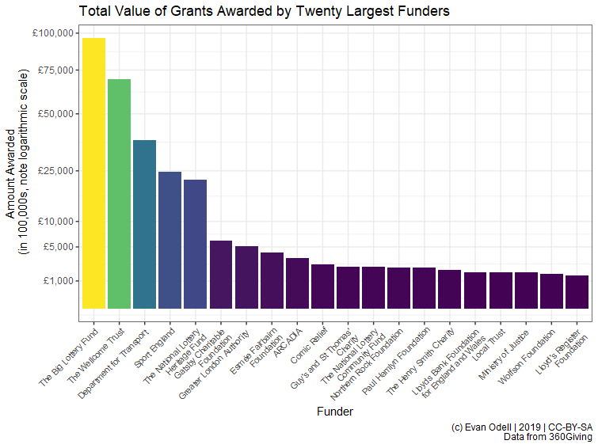

Access open data from 360Giving publishers. 360Giving is a data standard for publishing information about charitable grant giving in the UK. 360Giving maintains a registry of grant makers using the standard. The package provides functions to search and retrieve data on charitable giving.
Installation
You can install the development version from GitHub with:
# install.packages("devtools")
devtools::install_github("evanodell/threesixtygiving")Purpose
The threesixtygiving package provides tools for programmatically downloading and analysing grants made by charitable trusts using the 360Giving standard. These include functions to search available datasets, retrieve data and process it to tidy formats.
Usage
library(threesixtygiving)
library(dplyr)
library(ggplot2)
grants <- tsg_all_grants(timeout = 8, retries = 1)
df <- tsg_core_data(grants)
df2 <- df %>%
mutate(amount_awarded = case_when(
currency == "USD" ~ amount_awarded/1.29, ## rate on 2019-10-24
currency == "CAD" ~ amount_awarded/1.70,
currency == "CHF" ~ amount_awarded/1.27,
currency == "EUR" ~ amount_awarded/1.17,
TRUE ~ amount_awarded)) %>%
group_by(funding_org_name) %>%
summarise(n = n(),
amount_awarded = sum(amount_awarded)) %>%
mutate(avg = amount_awarded/n)
theme_set(theme_bw())
p1 <- ggplot(df2 %>% top_n(20, amount_awarded) %>%
mutate(amount_awarded2 = amount_awarded/100000),
aes(x = reorder(funding_org_name, -amount_awarded2),
y = amount_awarded2, fill = amount_awarded2)) +
geom_col() +
scale_y_sqrt(labels = scales::dollar_format(prefix = "£"),
breaks = c(1000, 5000, 10000, 25000, 50000, 75000, 100000)) +
scale_x_discrete(labels = scales::wrap_format(30)) +
scale_fill_viridis_c() +
labs(x = "Funder", y = "Amount Awarded
(in 100,000s, note logarithmic scale)",
title = "Total Value of Grants Awarded by Twenty Largest Funders",
caption = "(c) Evan Odell | Disability Rights UK | 2019 | CC-BY-SA
Data from 360Giving") +
theme(axis.text.x = element_text(angle = 45, hjust = 1, size = 8),
legend.position = "none")
p1
Notes
This project is possible thanks to support and encouragement from David Kane at 360Giving, and from Disability Rights UK.
Data licences
The actual grant data is available under a variety of open licences, typically a version of the Open Government Licence or one of the Creative Commons licences. Please respect the licence conditions that are attached to each dataset.
Citing threesixtygiving
Please cite threesixtygiving as:
Odell, Evan (2019). threesixtygiving: Download Charitable Grants from the ‘360Giving’ Platform. doi: 10.5281/zenodo.3474128, R package version 0.1.1, URL: https://docs.evanodell.com/threesixtygiving
A BibTeX entry for LaTeX users is:
@Manual{,
title = {threesixtygiving: Download Charitable Grants from the '360Giving' Platform},
author = {Evan Odell},
year = {2019},
doi = {10.5281/zenodo.3474128},
url = {https://docs.evanodell.com/threesixtygiving},
note = {R package version 0.1.1},
}Code of Conduct
Please note that the threesixtygiving package is released with a Contributor Code of Conduct. By contributing to this project, you agree to abide by its terms.